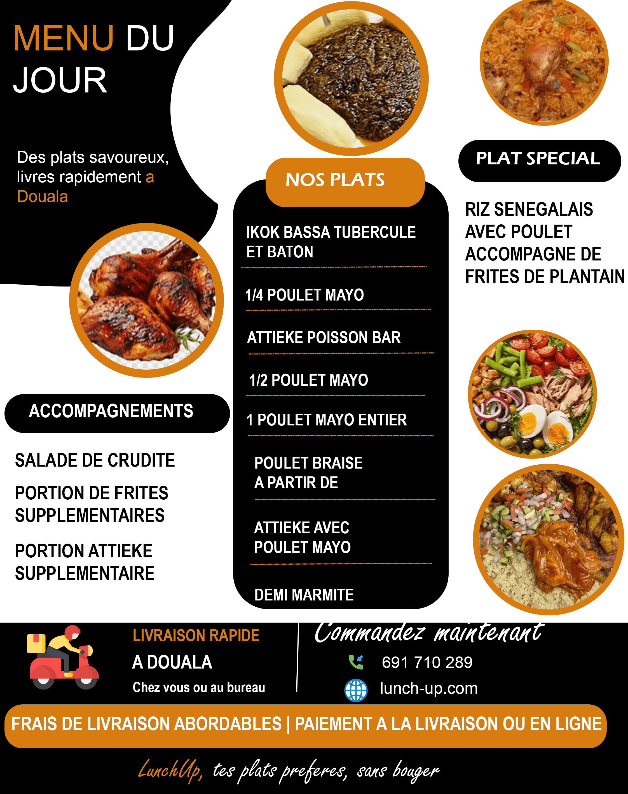
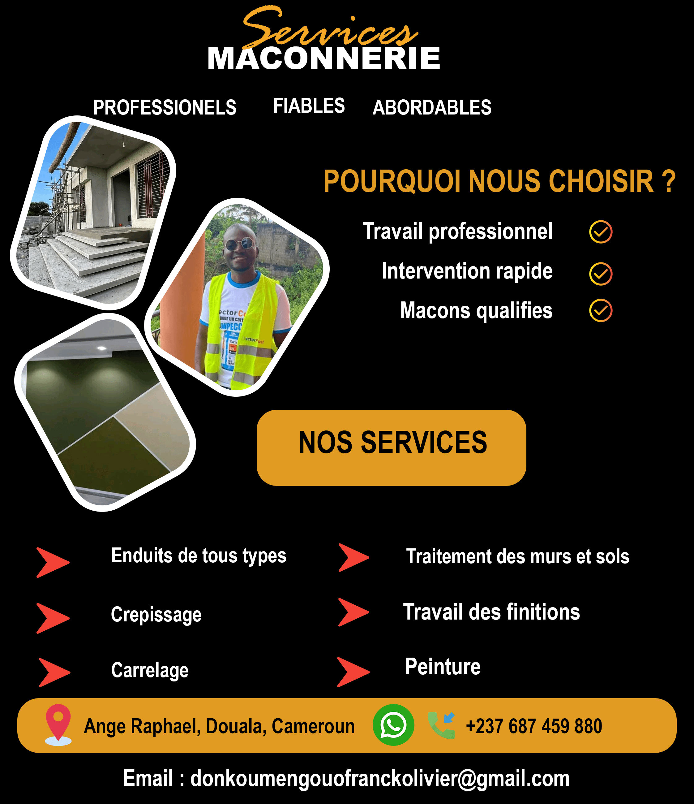

Projets de Design Graphique
Une sélection de créations graphiques conçues pour valoriser des événements, forger des identités de marque et capter l'attention sur les supports imprimés et digitaux.

Affiches de services
Affiche promotionnelle pour montrer mes services en tant que Designer Graphique.

Affiche publicitaire
Création d'un logo contemporain et de la charte graphique complète pour une entreprise de services numériques.

Flyer Exposition des Menus
Support de communication pour le lancement d'une nouvelle offre commerciale. Mise en page claire et incitative.

Flyers pour salon de coiffure
Ensemble de visuels cohérents pour Instagram et LinkedIn afin d'accroître l'engagement de la communauté en ligne.

Maconnerie : Bannières & Publicités Digitales
Création de déclinaisons de bannières web publicitaires avec accroches percutantes et boutons d'appel à l'action bien visibles.
Veillees de priere
Travaux d'illustration vectorielle et d'infographies synthétiques pour vulgariser des concepts informatiques complexes.